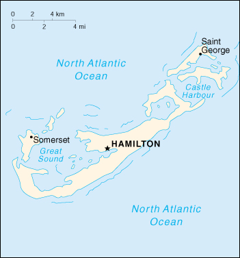

(overseas territory of the UK)
|
Bermuda (overseas territory of the UK) |
|
| Introduction Geography People Government Economy Communications Transportation Military Transnational Issues | ||
|  | ||
| Bermuda | Introduction | Top of Page |
| Background: | Bermuda was first settled in 1609 by shipwrecked English colonists headed for Virginia. Tourism to the island to escape North American winters first developed in Victorian times. Bermuda has developed into a highly successful offshore financial center. A referendum on independence was soundly defeated in 1995. |
| Bermuda | Geography | Top of Page |
| Location: | North America, group of islands in the North Atlantic Ocean, east of North Carolina (US) |
| Geographic coordinates: | 32 20 N, 64 45 W |
| Map references: | North America |
| Area: |
total:
58.8 sq km
land: 58.8 sq km water: 0 sq km |
| Area - comparative: | about 0.3 times the size of Washington, DC |
| Land boundaries: | 0 km |
| Coastline: | 103 km |
| Maritime claims: |
exclusive fishing zone:
200 NM
territorial sea: 12 NM |
| Climate: | subtropical; mild, humid; gales, strong winds common in winter |
| Terrain: | low hills separated by fertile depressions |
| Elevation extremes: |
lowest point:
Atlantic Ocean 0 m
highest point: Town Hill 76 m |
| Natural resources: | limestone, pleasant climate fostering tourism |
| Land use: |
arable land:
6%
permanent crops: 0% permanent pastures: 0% forests and woodland: 0% other: 94% (55% developed, 39% rural/open space) (1997 est.) |
| Irrigated land: | NA sq km |
| Natural hazards: | hurricanes (June to November) |
| Environment - current issues: | asbestos disposal; water pollution; preservation of open space |
| Geography - note: | consists of about 360 small coral islands with ample rainfall, but no rivers or freshwater lakes; some land, reclaimed and otherwise, was leased by US Government from 1941 to 1995 |
| Bermuda | People | Top of Page |
| Population: | 63,503 (July 2001 est.) |
| Age structure: |
0-14 years:
19.4% (male 6,091; female 6,230)
15-64 years: 69.43% (male 21,783; female 22,309) 65 years and over: 11.17% (male 3,073; female 4,017) (2001 est.) |
| Population growth rate: | 0.74% (2001 est.) |
| Birth rate: | 12.16 births/1,000 population (2001 est.) |
| Death rate: | 7.42 deaths/1,000 population (2001 est.) |
| Net migration rate: | 2.66 migrant(s)/1,000 population (2001 est.) |
| Sex ratio: |
at birth:
0.94 male(s)/female
under 15 years: 0.98 male(s)/female 15-64 years: 0.98 male(s)/female 65 years and over: 0.76 male(s)/female total population: 0.95 male(s)/female (2001 est.) |
| Infant mortality rate: | 9.55 deaths/1,000 live births (2001 est.) |
| Life expectancy at birth: |
total population:
77.12 years
male: 75.04 years female: 79.06 years (2001 est.) |
| Total fertility rate: | 1.81 children born/woman (2001 est.) |
| HIV/AIDS - adult prevalence rate: | NA% |
| HIV/AIDS - people living with HIV/AIDS: | NA |
| HIV/AIDS - deaths: | NA |
| Nationality: |
noun:
Bermudian(s)
adjective: Bermudian |
| Ethnic groups: | black 58%, white 36%, other 6% |
| Religions: | non-Anglican Protestant 39%, Anglican 27%, Roman Catholic 15%, other 19% |
| Languages: | English (official), Portuguese |
| Literacy: |
definition:
age 15 and over can read and write
total population: 98% male: 98% female: 99% (1970 est.) |
| Bermuda | Government | Top of Page |
| Country name: |
conventional long form:
none
conventional short form: Bermuda former: Somers Islands |
| Dependency status: | overseas territory of the UK |
| Government type: | parliamentary British overseas territory with internal self-government |
| Capital: | Hamilton |
| Administrative divisions: | 9 parishes and 2 municipalities*; Devonshire, Hamilton, Hamilton*, Paget, Pembroke, Saint George*, Saint Georges, Sandys, Smiths, Southampton, Warwick |
| Independence: | none (overseas territory of the UK) |
| National holiday: | Bermuda Day, 24 May |
| Constitution: | 8 June 1968, amended 1989 |
| Legal system: | English law |
| Suffrage: | 18 years of age; universal |
| Executive branch: |
chief of state:
Queen ELIZABETH II (since 6 February 1952), represented by Governor Thorold MASEFIELD (since NA June 1997)
head of government: Premier Jennifer SMITH (since 10 November 1998) cabinet: Cabinet nominated by the premier, appointed by the governor elections: none; the monarch is hereditary; governor appointed by the monarch; governor invites leader of largest party in Parliament to form a government as premier |
| Legislative branch: |
bicameral Parliament consists of the Senate (an 11-member body appointed by the governor) and the House of Assembly (40 seats; members are elected by popular vote to serve five-year terms)
elections: last held 9 November 1998 (next to be held NA November 2003) election results: percent of vote by party - PLP 54%, UBP 44%, NLP 1%, independents 1%; seats by party - PLP 26, UBP 14 |
| Judicial branch: | Supreme Court; Court of Appeal; Magistrate Courts |
| Political parties and leaders: | National Liberal Party or NLP [Dessaline WALDRON]; Progressive Labor Party or PLP [Jennifer SMITH]; United Bermuda Party or UBP [Pamela GORDON] |
| Political pressure groups and leaders: | Bermuda Industrial Union or BIU [Derrick BURGESS]; Bermuda Public Services Association or BPSA [Betty CHRISTOPHER] |
| International organization participation: | Caricom (observer), CCC, ICFTU, Interpol (subbureau), IOC |
| Diplomatic representation in the US: | none (overseas territory of the UK) |
| Diplomatic representation from the US: |
chief of mission:
Consul General Lawrence D. OWEN
consulate(s) general: Crown Hill, 16 Middle Road, Devonshire, Hamilton mailing address: P. O. Box HM325, Hamilton HMBX; American Consulate General Hamilton, Department of State, Washington, DC 20520-5300 telephone: [1] (441) 295-1342 FAX: [1] (441) 295-1592 |
| Flag description: | red, with the flag of the UK in the upper hoist-side quadrant and the Bermudian coat of arms (white and green shield with a red lion holding a scrolled shield showing the sinking of the ship Sea Venture off Bermuda in 1609) centered on the outer half of the flag |
| Bermuda | Economy | Top of Page |
| Economy - overview: | Bermuda enjoys one of the highest per capita incomes in the world, having successfully exploited its location by providing financial services for international firms and luxury tourist facilities for 360,000 visitors annually. The tourist industry, which accounts for an estimated 28% of GDP, attracts 84% of its business from North America. The industrial sector is small, and agriculture is severely limited by a lack of suitable land. About 80% of food needs are imported. International business contributes over 60% of Bermuda's economic output; a failed independence vote in late 1995 can be partially attributed to Bermudian fears of scaring away foreign firms. Government economic priorities are the further strengthening of the tourist and international financial sectors. |
| GDP: | purchasing power parity - $2.1 billion (2000 est.) |
| GDP - real growth rate: | 1.5% (2000 est.) |
| GDP - per capita: | purchasing power parity - $33,000 (2000 est.) |
| GDP - composition by sector: |
agriculture:
1%
industry: 10% services: 89% (1995 est.) |
| Population below poverty line: | NA% |
| Household income or consumption by percentage share: |
lowest 10%:
NA%
highest 10%: NA% |
| Inflation rate (consumer prices): | 2.7% (2000 est.) |
| Labor force: | 35,296 (1997) |
| Labor force - by occupation: | clerical 23%, services 22%, laborers 17%, professional and technical 17%, administrative and managerial 12%, sales 7%, agriculture and fishing 2% (1996) |
| Unemployment rate: | NEGL% (1995) |
| Budget: |
revenues:
$504.6 million
expenditures: $537 million, including capital expenditures of $75 million (FY97/98) |
| Industries: | tourism, finance, insurance, structural concrete products, paints, perfumes, pharmaceuticals, ship repairing |
| Industrial production growth rate: | NA% |
| Electricity - production: | 550 million kWh (1999) |
| Electricity - production by source: |
fossil fuel:
100%
hydro: 0% nuclear: 0% other: 0% (1999) |
| Electricity - consumption: | 511.5 million kWh (1999) |
| Electricity - exports: | 0 kWh (1999) |
| Electricity - imports: | 0 kWh (1999) |
| Agriculture - products: | bananas, vegetables, citrus, flowers; dairy products |
| Exports: | $56 million (2000 est.) |
| Exports - commodities: | reexports of pharmaceuticals |
| Exports - partners: | UK 29.5%, US 9.8% (1997) |
| Imports: | $739 million (2000 est.) |
| Imports - commodities: | machinery and transport equipment, construction materials, chemicals, food and live animals |
| Imports - partners: | US 34%, UK 9%, Mexico 8% (1997) |
| Debt - external: | $NA |
| Economic aid - recipient: | $27.9 million (1995) |
| Currency: | Bermudian dollar (BMD) |
| Currency code: | BMD |
| Exchange rates: | Bermudian dollar per US dollar - 1.0000 (fixed rate pegged to the US dollar) |
| Fiscal year: | 1 April - 31 March |
| Bermuda | Communications | Top of Page |
| Telephones - main lines in use: | 52,000 (1997) |
| Telephones - mobile cellular: | 7,980 (1996) |
| Telephone system: |
general assessment:
NA
domestic: modern, fully automatic telephone system international: 3 submarine cables; satellite earth stations - 3 Intelsat (Atlantic Ocean) |
| Radio broadcast stations: | AM 5, FM 3, shortwave 0 (1998) |
| Radios: | 82,000 (1997) |
| Television broadcast stations: | 3 (1997) |
| Televisions: | 66,000 (1997) |
| Internet country code: | .bm |
| Internet Service Providers (ISPs): | 20 (2000) |
| Internet users: | 25,000 (2000) |
| Bermuda | Transportation | Top of Page |
| Railways: | 0 km |
| Highways: |
total:
225 km
paved: 225 km unpaved: 0 km note: in addition, there are 232 km of paved and unpaved roads that are privately owned (1997) |
| Waterways: | none |
| Ports and harbors: | Hamilton, Saint George |
| Merchant marine: |
total:
105 ships (1,000 GRT or over) totaling 5,836,538 GRT/9,728,045 DWT
ships by type: bulk 27, cargo 4, container 15, liquefied gas 7, passenger 2, petroleum tanker 23, refrigerated cargo 16, roll on/roll off 8, short-sea passenger 3 note: includes some foreign-owned ships registered here as a flag of convenience: Canada 10, Hong Kong 10, Japan 1, Nigeria 4, Saudi Arabia 1, Sweden 3, Switzerland 2, UK 10, US 7 (2000 est.) |
| Airports: | 1 (2000 est.) |
| Airports - with paved runways: |
total:
1
2,438 to 3,047 m: 1 (2000 est.) |
| Bermuda | Military | Top of Page |
| Military branches: | Bermuda Regiment, Bermuda Police Force, Bermuda Reserve Constabulary |
| Military expenditures - dollar figure: | $NA |
| Military expenditures - percent of GDP: | NA% |
| Military - note: | defense is the responsibility of the UK |
| Bermuda | Transnational Issues | Top of Page |
| Disputes - international: | none |
{kind=link}
{kind=link}